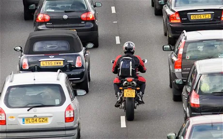

Tráfico
No vas a volver a saber lo que es estar estancado en tráfico. Se acabó el llegar tarde a cualquier sitio porque algún conductor haya decidido jugar a los coches de choque en tu camino hacia alguna cita.
O si eres de los que no ligan ni patrás, no llegarás tarde al trabajo jamás. Te voy a ser sincero, lector. Cómprate una moto y vas a ligar bastante. El problema es que solo será con otros moteros. Y ligará tu moto, no tú. Supéralo antes de comprarla y te evitarás disgustos.
Atención
¿Alguna vez te ha pasado que, pese a todos tus esfuerzos has pasado desapercibido?
Bueno, pues olvídate. Escape cambiado y vas a ser el centro de las miradas cada vez que arranques. Posiblemente mates a más de una vieja, pero es el precio del éxito...
Adrenalina
La vieja confiable. ¿Necesitas liberar algo de estrés o simplemente quieres pasarlo bien?
La respuesta aunque no quieras admitirlo, es si. Y encima más barato que hacerlo en un coche. Y mejor idea que dedicarte al alcohol, claro..
Opciones
Seamos realistas, si has llegado hasta esta página no tienes muchas más cosas en las que invertir tu tiempo. Lo primero es admitirlo.
Pero no todo es malo. Si además de tiempo, te sobra dinero, por una pequeña inversión puedes buscarte un buen hobby (pero no le preguntes a tu madre que opina de él).